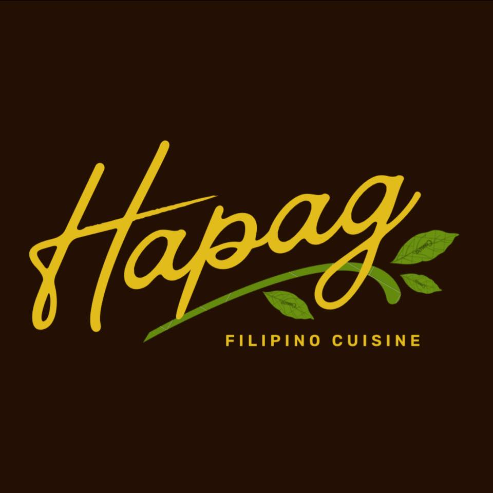
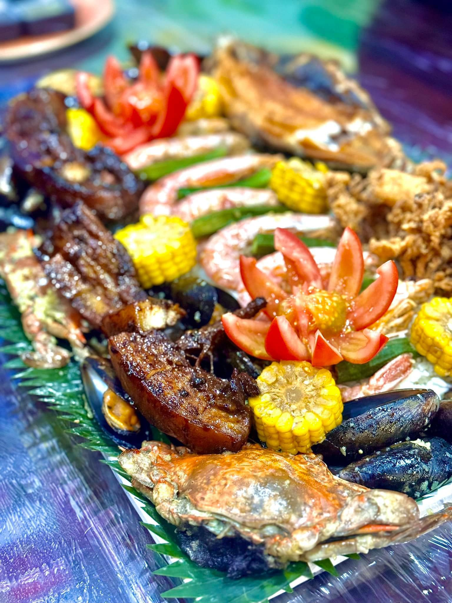

Our Story
Food to the Filipino is history. It is also bond, culture and identity
HAPAG brings the warmth of Filipino hospitality to events across Malta, serving familiar flavours, generous portions, and dishes made to bring people closer around the table.

Rooted in home cooking
Our dishes are inspired by the flavours many Filipino families grew up with: comforting, generous, and full of character.
Built for gatherings
From birthdays and family celebrations to office events and private occasions, Hapag is designed to make hosting feel easier and more memorable.
Served with warmth
We believe great catering is not only about the food. It is also about care, presentation, timing, and making guests feel welcome.

Why Hapag
Filipino hospitality in every serving.
The word “Hapag” represents the table. A place where family, friends, and guests come together. That is the heart of what we do.